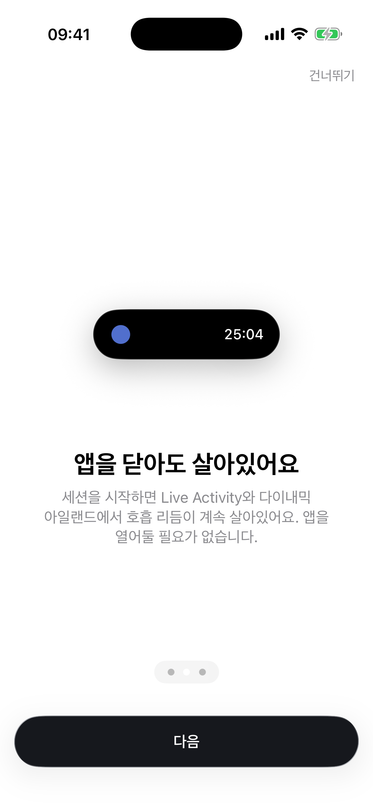
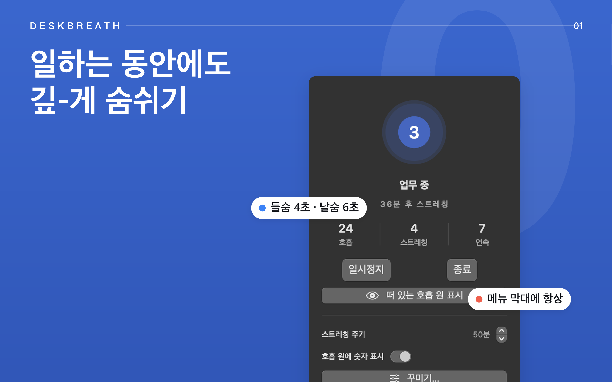
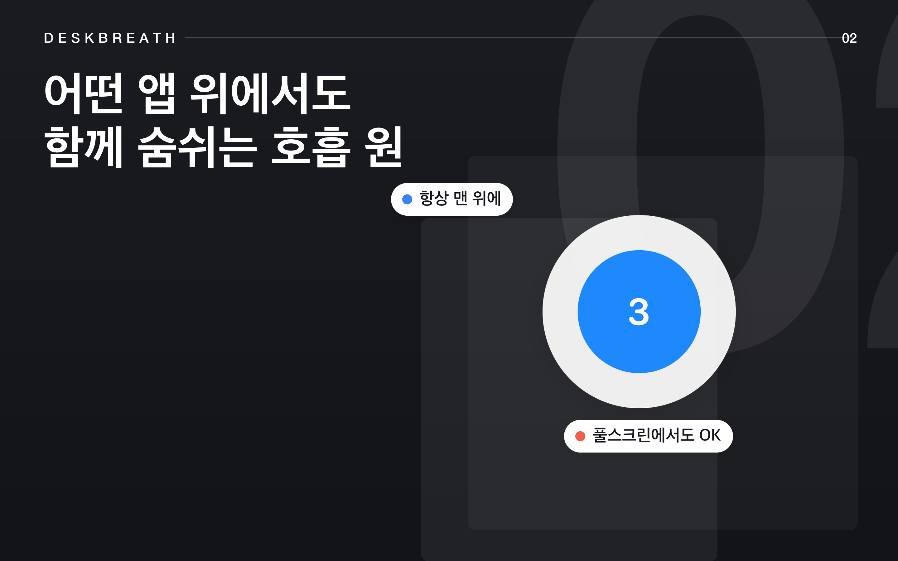
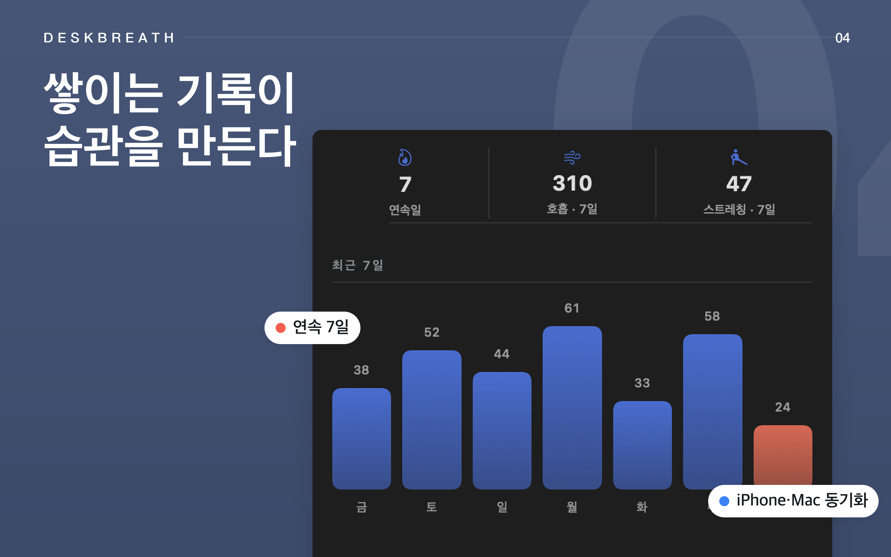
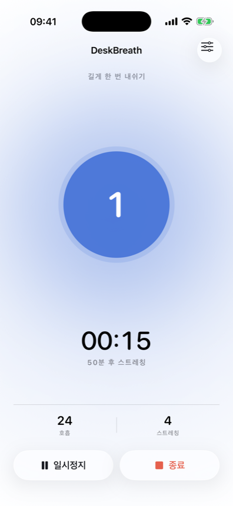
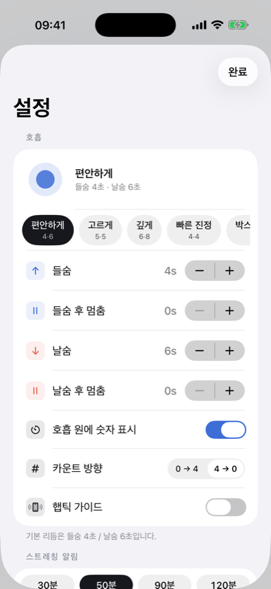
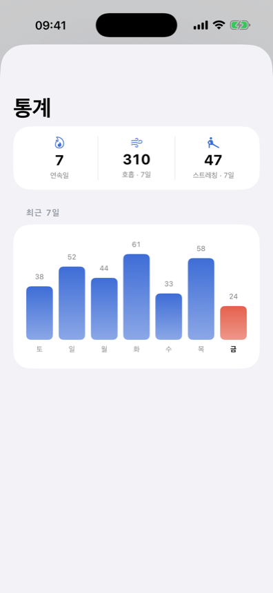

화상회의와 집중 작업 사이, 호흡은 자꾸 잊혀집니다. 데스크브레스는 앱을 닫아도 다이나믹 아일랜드와 메뉴바에 조용한 호흡 원을 띄워 둡니다 — 들숨 4초, 날숨 6초. 거북목이 굳어지기 전에, 야근이 길어지기 전에 곁눈질로 리듬을 확인하세요.
박스호흡, 4-7-8, 혹은 나만의 들숨·날숨 초 — 계정 없이 메뉴바나 앱에서 바로 무료로 시작합니다.
다이나믹 아일랜드나 메뉴바에서 호흡 원이 계속 움직입니다. 화면을 스크롤하다 한 번 곁눈질하는 것만으로 호흡이 다시 느려집니다.
30·60·90·120분마다 부드러운 알림이 자리에서 일어나 어깨를 풀고 자세를 바로잡으라고 알려줍니다.
거북목과 뻐근함은 앱을 다시 열 때까지 기다려주지 않습니다. 데스크브레스는 잠금화면에서도, 메뉴바에서도 호흡 원을 켜 둡니다.

라이브 액티비티가 다이나믹 아일랜드에 호흡 원과 카운트다운을 띄워 둡니다. 화상회의 중에도, 잠금을 풀지 않아도 보입니다.

작은 호흡 원이 메뉴바에 상주하고, 원하면 항상 위에 뜨는 플로팅 호흡 원이 작업 화면 위에 조용히 자리합니다.
메뉴바에 호흡 원을 고정하거나, 작업 화면 위에 플로팅 오브로 띄워두세요. 하루 종일 화면 어딘가에서 조용히 리듬을 지킵니다.





4-4-4-4 박스호흡, 4-7-8 등 — 무료로 내장, 한 탭이면 바로 시작합니다.
들숨·날숨 초를 직접 정하고, 단계가 바뀔 때마다 햅틱으로 느껴보세요 — 무료.
호흡 원 색을 바꾸고 원하는 이미지를 넣고, 카운트 방향까지 내게 맞게 뒤집습니다.
이번 주 실제로 끝낸 세션이 몇 번인지 확인하고 스트릭을 이어가세요.
30·60·90·120분마다 일어나서 스트레칭하고 자세를 바로잡으라는 알림.
Pro는 평생 한 번 결제입니다. 매달 빠져나가는 구독료는 없습니다.